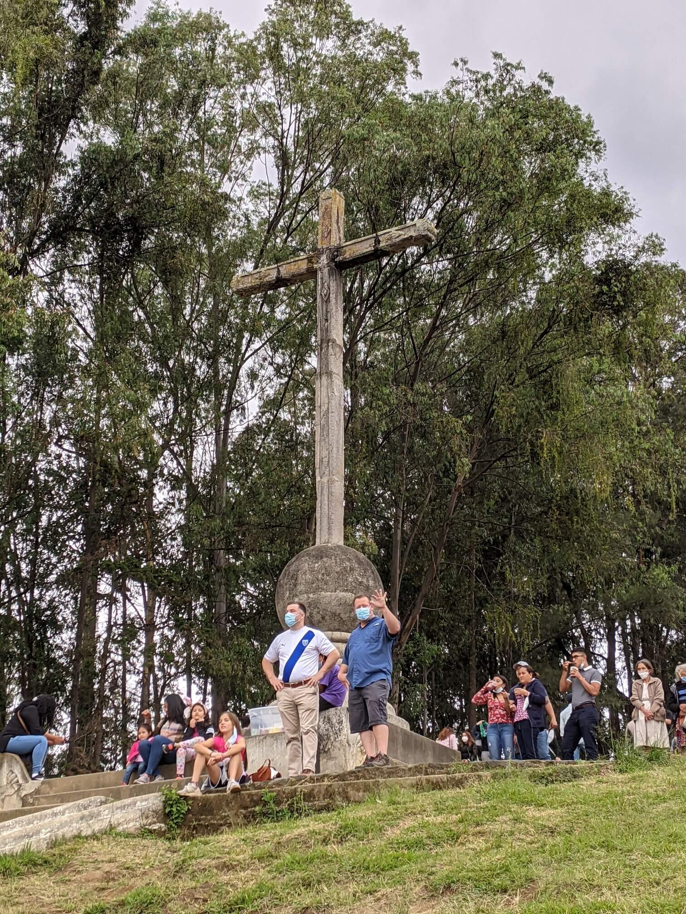

Antigua
Antigua Guatemala is a captivating city that transports visitors back to an era of cobblestone streets and well-preserved colonial architecture. This ancient city is surrounded by volcanoes. Fuego, Agua and Acatenango provide a backdrop to this picture perfect town. Antique is full of rich cultural heritage. Wander through the enchanting Parque Central, where the iconic Arco de Santa Catalina frames views of the nearby Volcan de Agua. Explore the meticulously restored colonial buildings, including the Cathedral of Santiago and the Palace of the Captain Generals. Delve into the local culture by visiting the market where indigenous crafts are sold. With its timeless charm and diverse attractions, Antigua Guatemala promises an immersive journey through history and culture. Cerro de La Cruz Hike a couple of hindered steps to get a panoramic view of Antigua Guatemala and across to Agua volcano Drive up for the same view Very large cross is visible from the valley Tanque Union (public pilas) Located a couple of blocks from Parque Central a smaller park boasts the historic location where locals would gather to wash their laundry. Lovely arches create a beautiful backdrop at sunrise while surrounded by the colonia architecture of the city Iglesia de La Merced A bright yellow Cathedral that almost glows in the early morning light. Built in the mid 1700s and contains one of the largest fountains in Central America called Fountain de los Pescados Parque Central La Fuente de las Sirenas is an ornate fountain with 3 sculptures depicting the beautiful, mythical siren sisters who would lure young sailors into the water so they could drown and eat them. There are also people there who will polish and shine your shoes for a dollar.

Cerro de La Cruz
Hike a couple of hindered steps to get a panoramic view of Antigua Guatemala and across to Agua volcano Drive up for the same view Very large cross is visible from the valley